HTB-Fawn
最后更新时间:
文章总字数:
预计阅读时间:
0x01 前言
真是手贱啊，搞了个电脑重启，忘记保存了，tm还要重写一次。。。。。难受，就当复习了~~~
0x02 Fawn
Task 1
3 个字母的缩写 FTP 代表什么？
让我们浅浅了解一下FTP协议，这里给出维基百科的解释：
1 | |
答案：File Transfer Protocol 文件传输协议
Task 2
FTP服务通常监听哪个端口？
1 | |
那这里基本就是21端口了
Task 3
FTP 的安全版本使用什么缩写词？
这里由Task 1我们得知有FTPS与SFTP两种安全版本，这里根据题目的后缀以p结尾，那答案自然就是SFTP了
Task 4
我们可以使用什么命令发送 ICMP 回显请求来测试与目标的连接？
老生常谈了：ping
Task 5
根据您的扫描，目标上运行的 FTP 版本是什么？
这里呢我之前采用的是直接ftp连接靶机，如下图，这里也显示了版本为vsFTPd
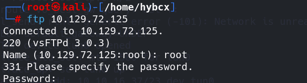
不过正确的思路应该是nmap扫描一下靶机开启了什么端口
1 | |
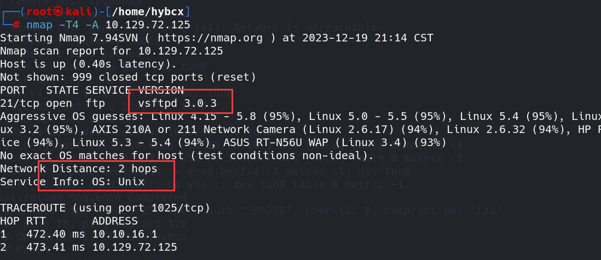
这里呢能查看到目标靶机的较为详细的信息
Task 6
根据您的扫描，目标上运行的操作系统类型是什么？
由上一个任务我们知道为Unix系统
Task 7
为了显示“ftp”客户端帮助菜单，我们需要运行什么命令？
这里基本习惯的话就是：ftp -h即可
Task 8
当您想在没有帐户的情况下登录时，通过 FTP 使用的用户名是什么？
这里呢，我们看到上述维基百科也有所解释，当目标靶机ftp服务允许匿名登录的话，是有一个默认的用户名的，且不需要密码就能直接登录。
1 | |
答案：anonymous
Task 9
我们收到的 FTP 消息“登录成功”的响应代码是什么？
既然是登陆成功，意味着我们需要去连接对方的ftp服务，如下图，我们通过默认用户名成功登录，并且看到响应码为230

Task 9
我们可以使用几个命令来列出 FTP 服务器上可用的文件和目录。一个是目录。另一种是在 Linux 系统上列出文件的常见方法。
答案：ls
Task 10
用于下载我们在 FTP 服务器上找到的文件的命令是什么？
这里百度一下就知道为get或者mget，这里呢get即可
Task 11
提交flag
这里意味着我们需要搜寻对方ftp服务中含有什么文件或者别的什么信息了
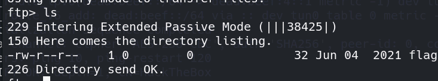
这里ls查看一下就发现对方服务上存在flag.txt文件，那我们需要将其远程下载到我们的本地：
get命令：
1 | |
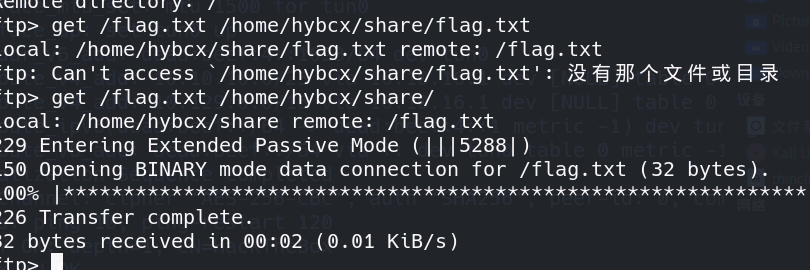
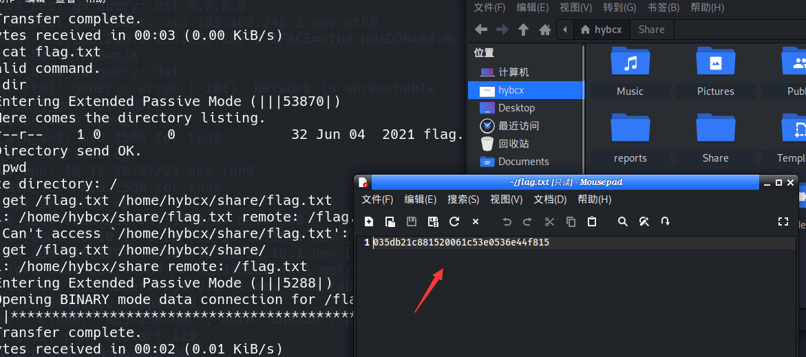
成功拿到flag
0x03 总结
在经过上述自己的实践之后，虽然简单，但我认为仍有必要跟着walkthrough来走一遍，接下来让我们学习一下佬的思路：
Introduction-介绍
有时，当我们被要求枚举客户端网络上特定主机的服务时，我们会遇到很可能配置不当的文件传输服务。本练习的目的是熟悉文件传输协议 (FTP)，它是所有主机操作系统的本机协议，长期以来用于简单的文件传输任务，无论是自动的还是手动的。如果不正确理解，FTP 很容易被错误配置。在某些情况下，我们正在评估的客户公司的员工可能希望绕过文件检查或防火墙规则，将文件从自己传输到同事。考虑到当今企业网络内控制和监视数据流的许多不同机制，这种情况成为我们可能在野外遇到的实质性且可行的案例。
同时，FTP 可用于将日志文件从一台网络设备传输到另一台网络设备或日志收集服务器。假设负责处理配置的网络工程师忘记了正确保护接收 FTP 服务器的安全，或者没有足够重视日志中包含的信息，并决定故意不保护 FTP 服务。在这种情况下，攻击者可以利用日志并从中提取各种信息，这些信息随后可用于绘制网络、枚举用户名、检测活动服务等。
我们来看看FTP是什么，根据维基百科的定义：
1 | |
从上面摘录的第一行中，我们可以看到提到了客户端-服务器模型架构。这是指网络中的主机在它们之间传输数据的过程中所扮演的角色。用户可以从客户端（自己的主机）向服务器（集中式数据存储设备）下载和上传文件，反之亦然。从概念上讲，客户端始终是向服务器下载和上传文件的主机，而服务器始终是安全存储正在传输的数据的主机。
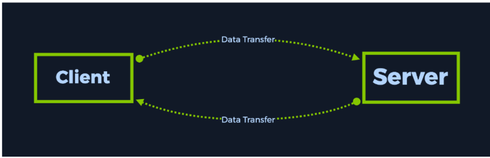
使用 FTP 协议时，客户端还可以浏览服务器上的可用文件。从用户的终端角度来看，此操作看起来就像浏览自己的操作系统目录以查找所需的文件。 FTP 服务还附带 GUI（图形用户界面），类似于 Windows 操作系统程序，使初学者能够更轻松地导航。 FileZilla 是著名的面向 GUI 的 FTP 服务的一个示例。不过，我们首先要了解端口公开运行服务意味着什么。
运行活动服务的端口是目标 IP 地址的保留空间，用于接收请求和发送结果。如果我们只有 IP 地址或主机名，那么主机一次只能执行一项任务。
这意味着，如果您想同时浏览网页并通过计算机上的应用程序播放音乐，则无法实现，因为 IP 地址将用于处理前者或后者，但不能同时处理两者。通过端口，您可以让一个 IP 地址处理多种服务，因为它增加了另一层区别。
在下面所示的情况中，我们可以看到 FTP 在端口 21 上处于活动状态。但是，让我们添加一些额外的服务，例如 SSH（安全外壳协议）和 HTTPD（Web 服务器），以探索更典型的示例。通过这种类型的配置，网络管理员已经设置了基本的核心 Web 服务器配置，允许他们在需要时同时实现以下功能：
- 接收和发送可用于配置 Web 服务器或向外部源提供日志的文件
- 能够从远程主机登录以进行远程管理，以防需要任何配置更改
- 提供可通过另一台远程主机访问的 Web 内容主机的网络浏览器
从下图中，您可以看到 FTP 在主机逻辑结构中的位置，以及可能同时在其上运行的其他服务。
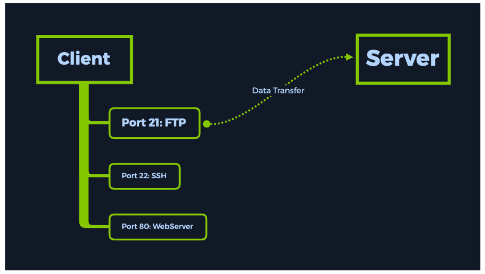
Wiki 文章显示，在没有 SSL/TLS (FTPS) 或 SSH 隧道 (SFTP) 等协议提供的加密层的情况下使用 FTP 被认为是非标准。 FTP 本身确实能够在允许访问存储的文件之前要求提供凭据。然而，这里的缺陷是包含所述文件的流量可以通过所谓的中间人攻击（MitM）来拦截。文件的内容可以以纯文本形式读取（即未加密的、人类可读的形式）。
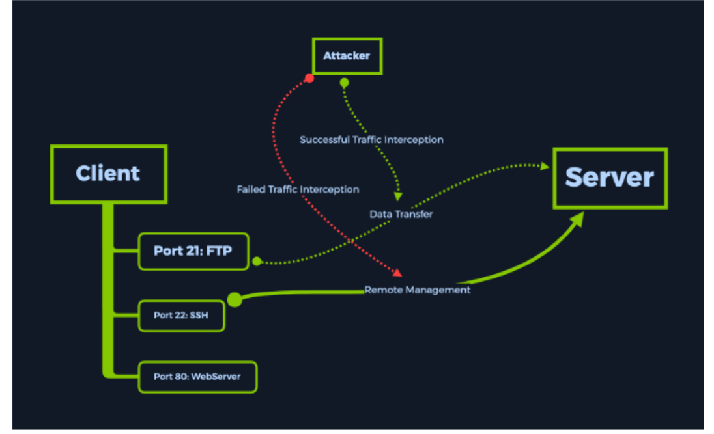
然而，如果网络管理员选择使用 SSL/TLS 协议包装连接或通过 SSH 隧道传输 FTP 连接（如下所示），以添加一层只有源主机和目标主机才能解密的加密层，这将成功挫败大多数人的攻击：中间人攻击。请注意端口 21 是如何消失的，因为 FTP 协议在端口 22 上转移到 SSH 协议之下，从而通过它建立隧道并防止任何拦截。
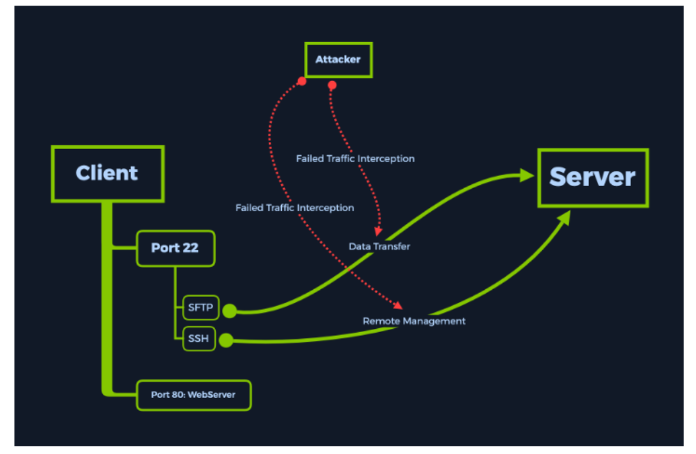
然而，我们在这种情况下处理的情况要简单得多。我们只会与运行简单且配置错误的 FTP 服务的目标进行交互。让我们继续分析在内部主机上运行的此类服务是什么样子的。
Enumeration-枚举
首先，让我们检查一下 VPN 连接是否已建立。使用 ping 协议可以帮助解决此问题，因为它是一种到达目标以获得响应的低开销方法，从而确认我们的连接已建立，并且目标可以到达。低开销意味着默认情况下发送到目标的数据非常少，使我们能够快速检查连接状态，而无需等待整个扫描完成。可以使用命令从终端调用 ping 协议，其中 {target_IP} 是 Fawn 机器实例的 IP 地址，如 Start Point 实验室下的 Hack The Box 网页上所示。
请注意，这在大型企业环境中可能并不总是有效，因为防火墙通常具有阻止主机之间 ping 的规则，即使在同一子网 (LAN) 中也是如此，以避免内部威胁并发现其他主机和服务。
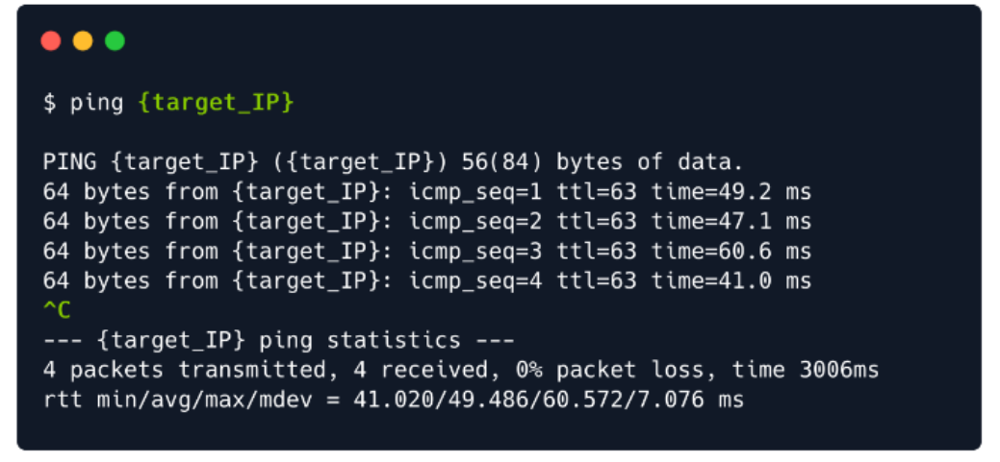
我们可以通过按键盘（Ctrl+C）来取消该命令，否则它将无限运行。
根据命令的输出，我们可以看到正在从目标主机接收响应。这意味着可以通过我们建立的 VPN 隧道访问该主机。我们现在可以开始扫描主机上开放的服务。
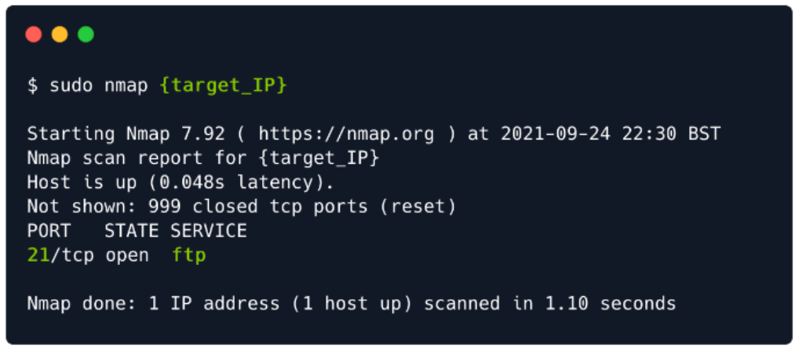
使用我们之前使用的命令进行扫描，我们可以看到 FTP 服务已打开并在端口 21 上运行。
但是，如果我们想知道该端口上运行的服务的实际版本怎么办？使用不同的选择扫描它可以为我们提供所需的信息吗？
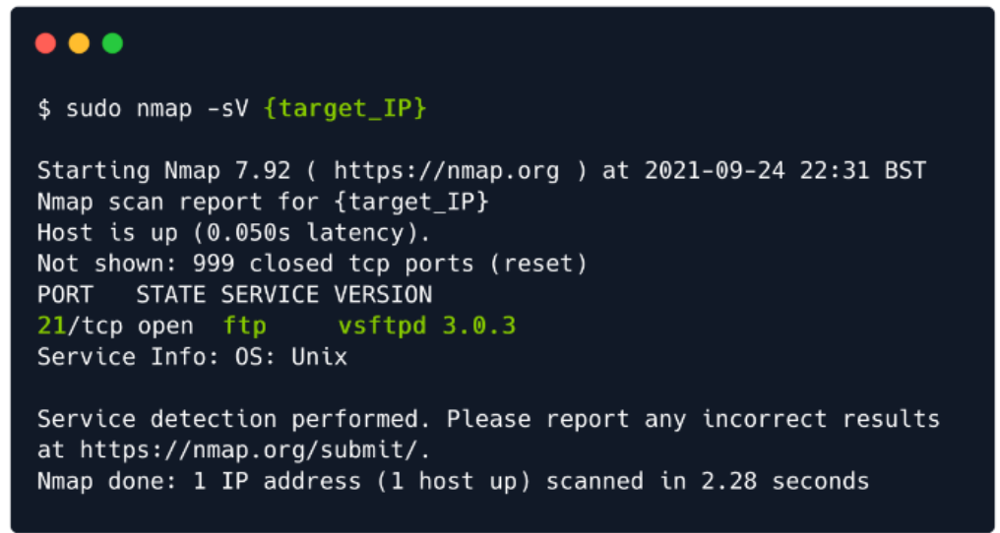
在我们的例子中，-sV代表版本检测。使用此开关将使我们的扫描时间更长，但将使我们更深入地了解先前检测到的端口上运行的服务的版本。这意味着我们一眼就能看出目标是否由于运行过时的软件而容易受到攻击，或者我们是否需要更深入地挖掘来找到我们的攻击向量。
我们不会考虑利用该服务本身。我们将朝着我们的目标迈出一小步，下一步将涉及简单地与服务进行交互，以了解更多关于我们应该如何实现目标的信息。然而，拥有服务版本总是可以帮助我们更深入地了解扫描端口上正在运行的内容。
Foothold-立足点
现在是我们与目标互动的时候了。
为了访问FTP服务，我们将在自己的主机上使用该命令。最好快速检查一下您的软件是否是最新的并且安装是否正确。如果安装了 ftp 服务，运行下面的命令将显示与图中相同的输出。否则，它将继续安装。
这个末尾的-y命令用于接受安装，而不会中断进程来询问您是否要继续。
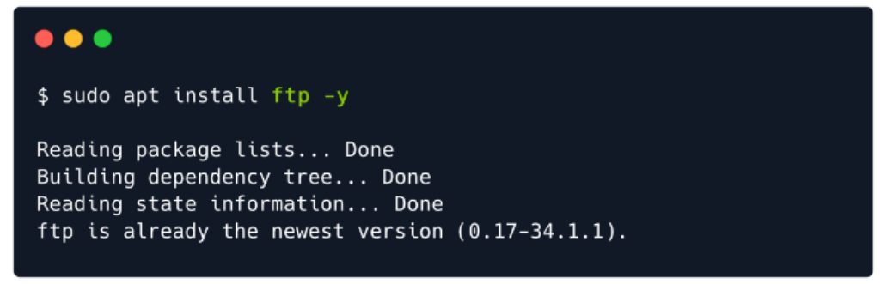
安装完成后，您可以运行命令ftp -h来查看该服务的功能。
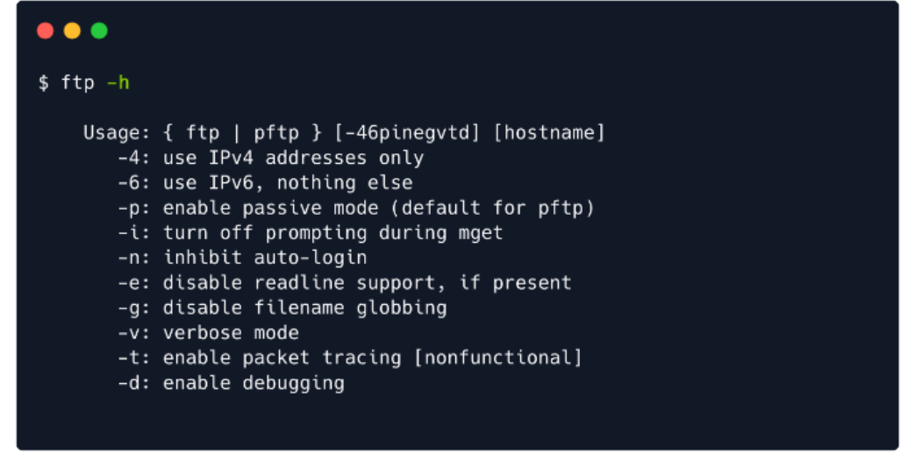
从上面的摘录中，我们可以看到我们可以使用下面的命令连接到目标主机。这将发起一个请求，对目标上运行的 FTP 服务进行身份验证，这将向我们的主机返回一个提示：
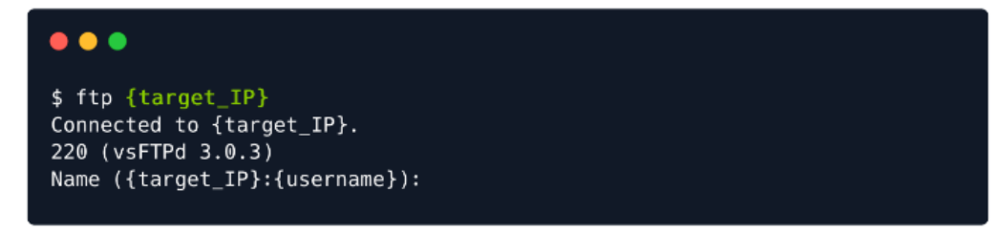
该提示将询问我们想要登录的用户名。这就是奇迹发生的地方。
运行 FTP 服务的典型错误配置允许anonymous帐户像任何其他经过身份验证的用户一样访问该服务。出现提示时可以输入anonymous用户名，然后输入任何密码，因为服务将忽略该特定帐户的密码。
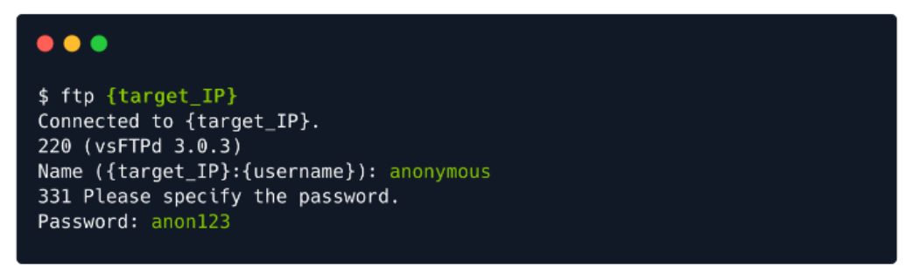
填写密码后点击，可以看到我们已经登录成功了。我们的终端发生了变化，以便向我们表明我们现在可以发出命令。
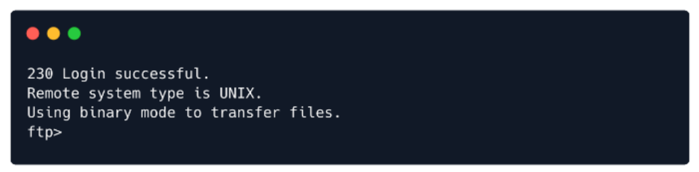
输入help命令可以让我们查看哪些命令可用。您将能够在您有权访问的每个脚本和服务中看到这种模式。键入-h、–help、 或help命令将始终发出您作为用户可用的所有命令的列表，偶尔会包含说明。如果您想更深入地了解特定命令，可以使用不同的命令：man {commandName} 。不过，现在让我们回到我们的目标。
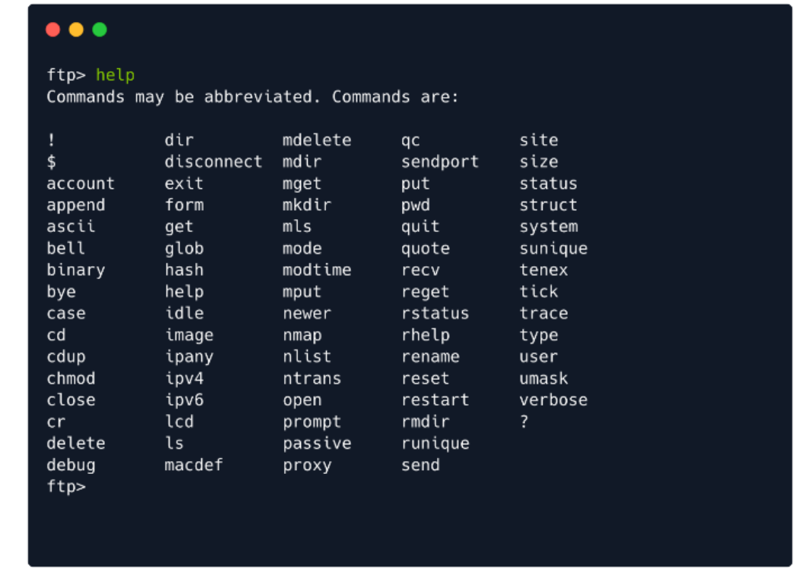
这里列出的一些命令对我们来说似乎很熟悉。我们已经知道如何使用 ls 和 cd 。让我们发出第一个命令并查看文件夹的内容。
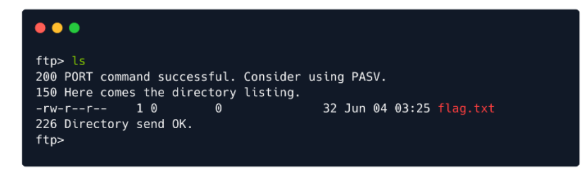
从输出中您可以注意到，FTP 服务的操作还会发出您发送到远程主机的命令的状态。状态更新的含义如下：
1 | |
现在，我们可以继续将flag.txt下载到我们的主机（虚拟机）。为此，我们可以使用get命令，后跟我们要下载的文件的名称。在我们的例子中，它看起来像这样：
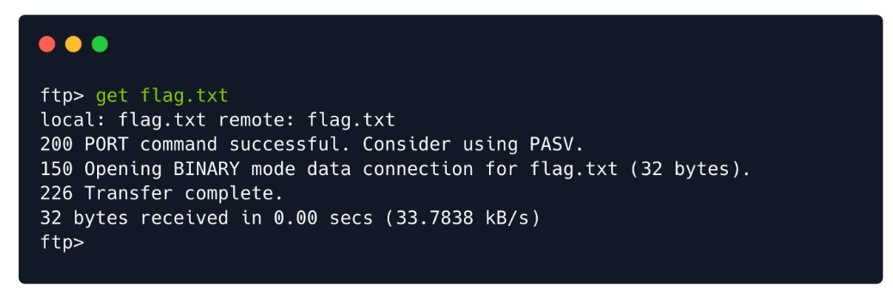
这将触发将文件下载到您发出命令ftp {machineIP}时所在的同一目录，如果我们退出 FTP 服务，我们现在将在主机上看到相同的文件。
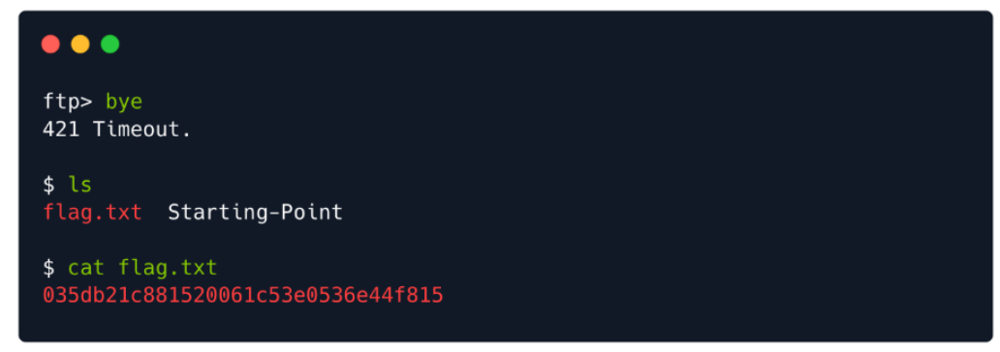
完结！–很有收获